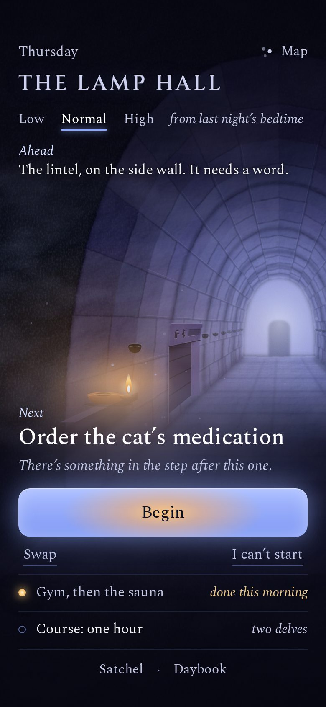
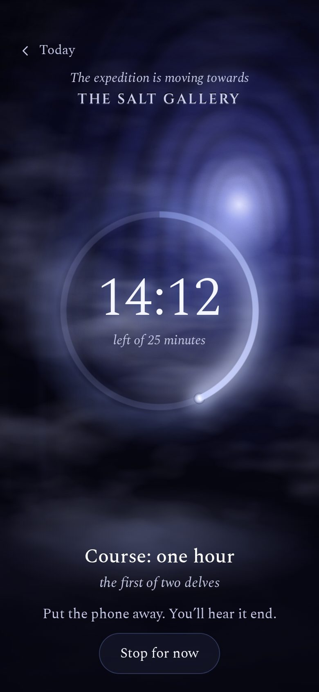
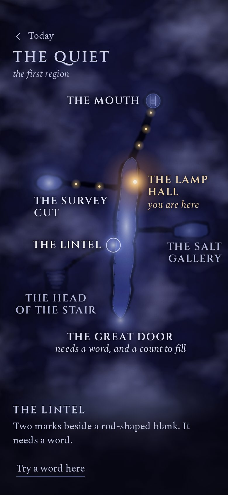
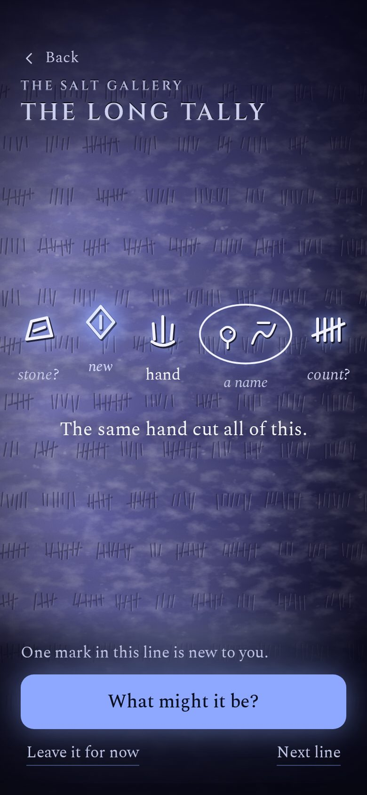
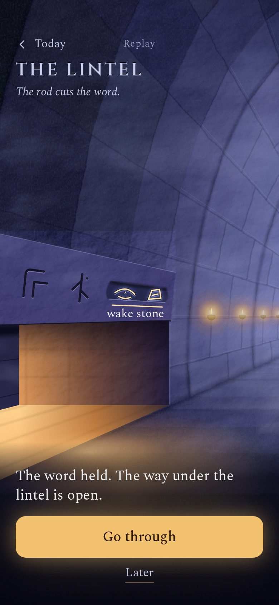
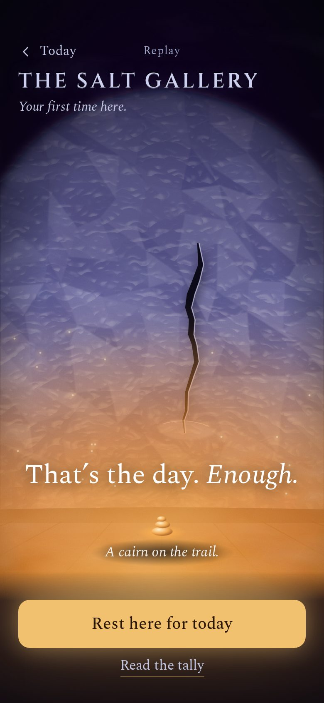
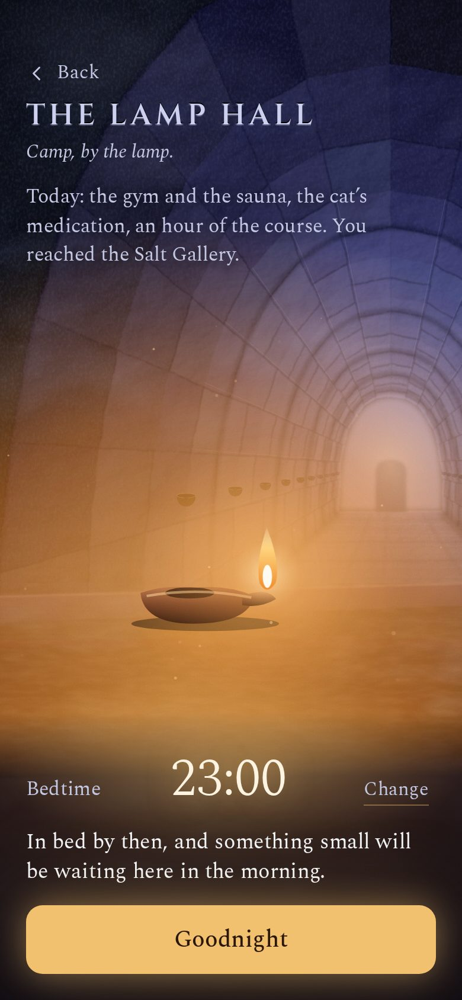
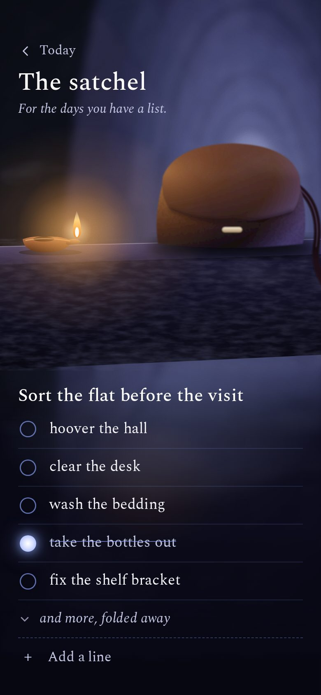
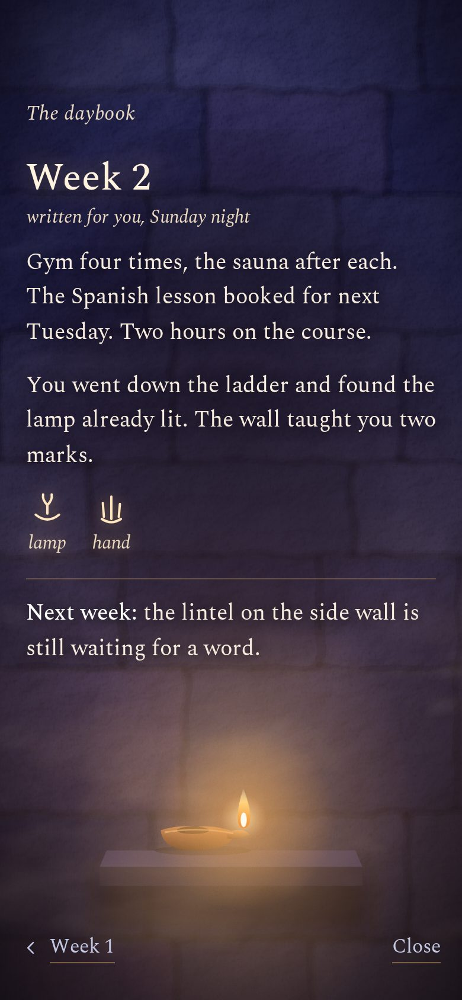

The Turning Day
The stone is always lit violet. The day turns through light inside the scene: a trace of amber at dawn, the floor lit by mid-afternoon, the salt face gold at the arrival, the lower half of the hall glowing at camp. Warm light is what a finished day earns.
Two voices: the place speaks in carved capitals (the Lamp Hall, the marks, the records); your own life speaks in plain print, sentence case (jobs, times, buttons, the satchel, the daybook).
Close, low views of cut stone in drifting fog, and one bank of light carrying the one thing to do.

01The morningViolet light along the Lamp Hall; the next job in a bank of light. Satchel, daybook and camp are one quiet tap below.- 02The same day, afternoonTwo jobs done: amber lamplight now claims the floor.
- 03The same day, doneNothing next: the day is enough, and camp is by the lamp.

04A delveA soft ring of light fills as the minutes pass; the passage keeps flowing. It ends in a breather.
05The mapThe first region from above, through drifting fog that thins where you have walked.
06A recordOne line of the long tally, large; the one new mark glows to be guessed.
07Cutting a wordThe rod cuts two marks into the lintel, the word locks, the lamps wake down the hall.
08Day completeThe Salt Gallery: gold light rises up the crystal face. Enough.
09CampLamplight fills the lower half of the hall; only the vault stays violet.
10The satchelA list, on request, in plain print. Nothing counted.
11The daybookWeek 2, lamp-lit words on a stone wall, written for you in plain English.
Static mock-ups at 390 × 844. Also: the map after the lintel opens, the breather. Cutting a word and day complete play on open; “Replay” (mock-up only) plays them again. Layouts hold at 390×844 and 360×780.